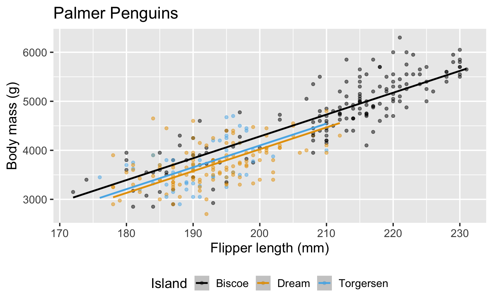
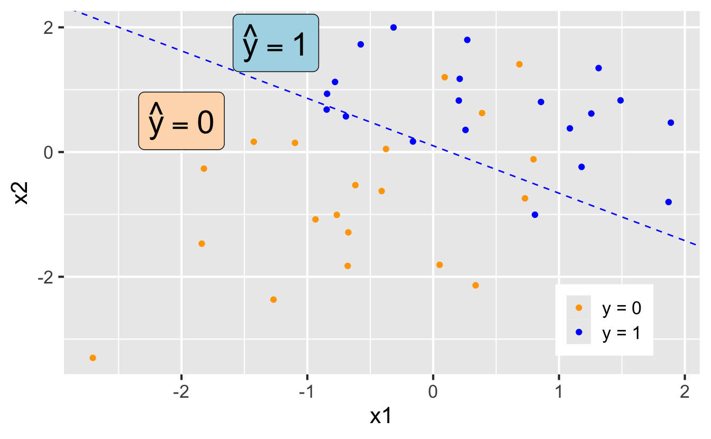

Logistic regression
Modeling and inference
Packages
- tidyverse for data wrangling and visualization
- tidymodels for modeling
Regression so far
Recap: Simple linear regression
Numerical outcome and one numerical predictor:

Recap: Multiple linear regression
Numerical outcome and one categorical predictor (two levels):
Recap: multiple linear regression
Numerical outcome, numerical and categorical predictors:

New scenario: binary outcome
A binary outcome
\[ y = \begin{cases} 1 & &&\text{eg. Yes, Win, True, Heads, Success}\\ 0 & &&\text{eg. No, Lose, False, Tails, Failure}. \end{cases} \]
Who cares?
If we can model the relationship between predictors (\(x\)) and a binary outcome (\(y\)), we can use the model to do a special kind of prediction called classification.
Example: Is the e-mail spam or not?
\(\mathbf{x}\): Word and character counts in an e-mail
\[ y = \begin{cases} 1 & \text{it's spam}\\ 0 & \text{it's legit} \end{cases} \]
Subject: Congratulations! You‚Äôve Been Selected for an Exclusive Reward üéÅ
Dear Customer,
You have been chosen as one of our preferred recipients to receive a special complimentary gift. This is our way of thanking you for your continued interest in our services.
To claim your reward, simply complete our short survey. Your participation takes only 60 seconds, and your prize will be shipped at no cost to you.
Click here to start your survey and claim your reward [Claim Reward Link]
This exclusive offer is available for the next 48 hours only. Don’t miss your chance to enjoy this limited opportunity.
Warm regards,
Promotions Team
Exclusive Rewards Center
Sample spam email language generated by Chat GPT with the prompt “Generate a fake “promotional” style spam email that doesn’t contain any explicit words.”
Example: Is it cancer or not?
\(\mathbf{x}\): features in a medical image
\[ y = \begin{cases} 1 & \text{it's cancer}\\ 0 & \text{it's healthy} \end{cases} \]

Photo by National Cancer Institute on Unsplash.
Example: Will they default?
\(\mathbf{x}\): financial and demographic info about a loan applicant
\[ y = \begin{cases} 1 & \text{applicant is at risk of defaulting on loan}\\ 0 & \text{applicant is safe} \end{cases} \]
Photo by PabitraKaity on Pixabay.
Example: Will they reoffend?
\(\mathbf{x}\): info about a criminal suspect and their case
\[ y = \begin{cases} 1 & \text{suspect is at risk of re-offending pre-trial}\\ 0 & \text{suspect is safe} \end{cases} \]
Machine Bias on ProPublica.
How do we model this type of data?
Straight line of best fit is a little silly

Instead: S-curve of best fit
Instead of modeling \(y\) directly, we model the probability that \(y=1\):

- “Given new email, what’s the probability that it’s spam?”
- “Given new image, what’s the probability that it’s cancer?”
- “Given new loan application, what’s the probability that applicant defaults?”
Why don’t we model y directly?
-
Recall regression with a numerical outcome:
- Our models do not output guarantees for \(y\), they output predictions that describe behavior on average;
. . .
-
Similar when modeling a binary outcome:
- Our models cannot directly guarantee that \(y\) will be zero or one. The correct analog to “on average” for a 0/1 outcome is “what’s the probability?”
So, what is this S-curve, anyway?
It’s the logistic function:
\[ \text{Prob}(y = 1) = \frac{e^{\beta_0+\beta_1x}}{1+e^{\beta_0+\beta_1x}}. \]
. . .
If you set p = Prob(y = 1) and do some algebra, you get the simple linear model for the log-odds:
\[ \log\left(\frac{p}{1-p}\right) = \beta_0+\beta_1x. \]
This is called the logistic regression model.
Log-odds?
\(p = Prob(y = 1)\) is a probability – A number between 0 and 1
\(p / (1 - p)\) is the odds – A number between 0 and \(\infty\)
The log odds \(log(p / (1 - p))\) is a number between \(-\infty\) and \(\infty\), which is suitable for the linear model
Logistic regression
\[ \log\left(\frac{p}{1-p}\right) = \beta_0+\beta_1x \]
The logit function \(log(p / (1-p))\) is an example of a link function that transforms the linear model to have an appropriate range
This is an example of a generalized linear model
Estimation
We estimate the parameters \(\beta_0\), \(\beta_1\), etc. using maximum likelihood (don’t worry about it) to get the “best fitting” S-curve
The fitted model is
\[ \log\left(\frac{\widehat{p}}{1-\widehat{p}}\right) = b_0+b_1x \]
Classification
Step 1: Pick a threshold
Select a number \(0 < p^* < 1\):
- if \(\text{Prob}(y=1)\leq p^*\), then predict \(\widehat{y}=0\)
- if \(\text{Prob}(y=1)> p^*\), then predict \(\widehat{y}=1\)
Step 2: Find the decision boundary
Solve for the x-value that matches the threshold:
- if \(\text{Prob}(y=1)\leq p^*\), then predict \(\widehat{y}=0\)
- if \(\text{Prob}(y=1)> p^*\), then predict \(\widehat{y}=1\)
Step 3: Classify a new arrival
A new data point is observed up with \(x_{\text{new}}\). Which side of the boundary is it on?
- if \(x_{\text{new}} \leq x^\star\), then \(\text{Prob}(y=1)\leq p^*\), so predict \(\widehat{y}=0\) for the new observation
- if \(x_{\text{new}} > x^\star\), then \(\text{Prob}(y=1)> p^*\), so predict \(\widehat{y}=1\) for the new observation
Let’s change the threshold
A new data point is observed with \(x_{\text{new}}\). Which side of the boundary are they on?
- if \(x_{\text{new}} \leq x^\star\), then \(\text{Prob}(y=1)\leq p^*\), so predict \(\widehat{y}=0\) for the new observation
- if \(x_{\text{new}} > x^\star\), then \(\text{Prob}(y=1)> p^*\), so predict \(\widehat{y}=1\) for the new observation
Nothing special about one predictor…
Two numerical predictors and one binary outcome:
“Multiple” logistic regression
On the probability scale:
\[ \text{Prob}(y = 1) = \frac{e^{\beta_0+\beta_1x_1+\beta_2x_2+...+\beta_mx_m}}{1+e^{\beta_0+\beta_1x_1+\beta_2x_2+...+\beta_mx_m}}. \]
For the log-odds, a multiple linear regression:
\[ \log\left(\frac{p}{1-p}\right) = \beta_0+\beta_1x_1+\beta_2x_2+...+\beta_mx_m. \]
Decision boundary, again
It’s linear! Consider two numerical predictors:

- if new \((x_1,\,x_2)\) below, \(\text{Prob}(y=1)\leq p^*\). Predict \(\widehat{y}=0\) for the new observation
- if new \((x_1,\,x_2)\) above, \(\text{Prob}(y=1)> p^*\). Predict \(\widehat{y}=1\) for the new observation